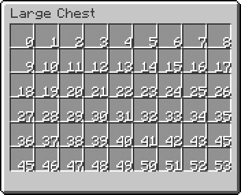

Advance Gui Prefix

Spigot 1.8 ~ 1.13 向けのプラグインです。
GUI仕様の完全カスタマイズ可能プレフィックスシステムを追加します。
Configファイルの設定方法は以下に記述してあります。
GUI上のアイテムアイコンを自由に設定でき、凝ったデザインを作ることもできます。
プレフィックスGUI表示コマンド
| コマンド | 説明 |
|---|---|
| /prefix | 自身のプレフィックスの設定画面を開きます。 |
| /prefix [player] | 指定プレイヤーのプレフィックスの設定画面を開きます。 |
| /prefix [player] [player] | 指定プレイヤーに指定プレイヤーのプレフィックスの設定画面を表示します。 |
プレフィックス管理系コマンド
| コマンド | 説明 |
|---|---|
| /adminprefix set [player] [prefix] | プレイヤーのプレフィックスを指定文字列に変更します。 |
| /adminprefix reset [player] | 指定プレイヤーのプレフィックスをリセットします。 |
| /adminprefix give [player] [prefixID] | 指定プレイヤーに指定IDのプレフィックスの使用権限を付与します。 |
| /adminprefix take [player] [prefixID] | 指定プレイヤーの指定IDのプレフィックスの使用権限を剥奪します。 |
| /adminprefix list | プレフィックスの一覧を表示します。 |
| /adminprefix reload | プレフィックス設定のコンフィグをリロードします。 |
| /adminprefix help | コマンドヘルプを表示します。 |
| パーミッション | 説明 |
|---|---|
| AdvanceGuiPrefix.ShowMyselfPlayer | 自分自身のプレフィックスを表示・編集できます。 |
| AdvanceGuiPrefix.ShowOtherPlayer | 指定プレイヤーのプレフィックスを表示できます。 |
| AdvanceGuiPrefix.changeOtherPlayer | 指定プレイヤーのプレフィックスを編集できます。 |
| AdvanceGuiPrefix.runAdminCommand | プレフィックス管理系コマンドの実行を許可します。 |
スロット番号
